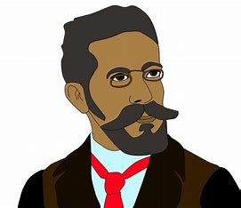
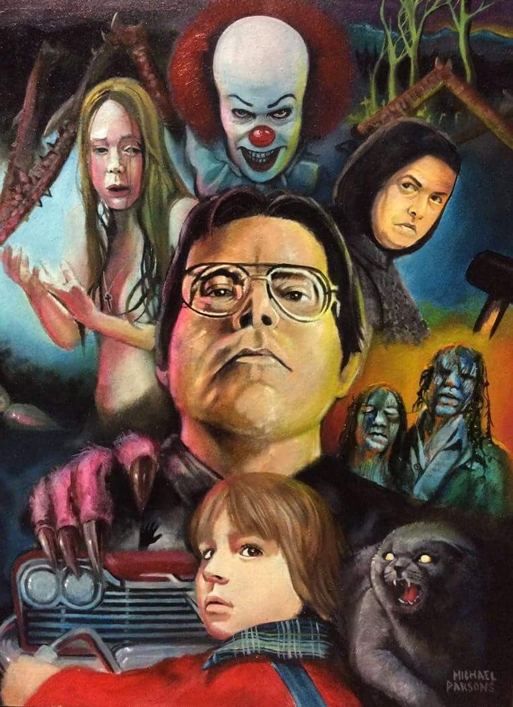
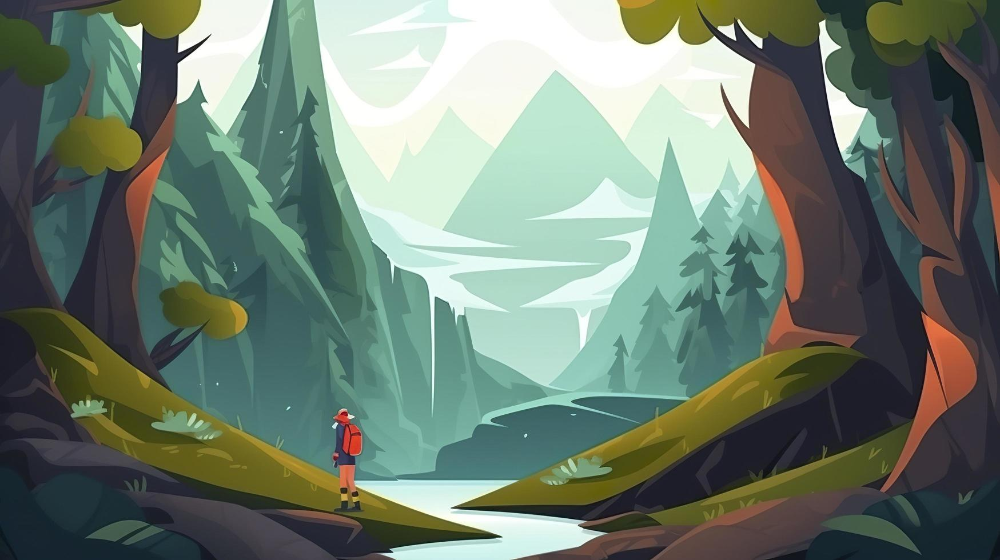

Introdução
Daremos uma breve explicação de cada gênero de livro e explicar mais a fundo o que cada um tem de escpecial, e o que você pode aprender em cada um, afinal cada livro é contada uma história diferente e que pode ser aberta a várias interpretações assim como o livro Pequeno Príncipe exemplifica bem isso, dependendo da idade em que você lê ele sempre mostra uma interpretação diferente e essa é a parte mais elegante em um livro, conforme você tem mais maturidade de encarar as coisas a sua concepção vai mudando e no livro isso não é diferente. Quando começamos a ler vários tipos de gêneros, encontramos novas aventuras e novas experiências que podem ou não acontecer com a gente , e essa é a melhor parte de um livro, expressar e incentivar a imaginação e a criatividade nas coisas, com isso iremos introduzir aos principais gêneros e detalhar sobre eles.Ficção Científica
A ficção científica é um gênero literário que explora cenários imaginários, frequentemente baseados em avanços científicos e tecnológicos. Este tipo de literatura permite que autores e leitores especulem sobre o futuro, questionando as implicações de descobertas científicas e inovações tecnológicas, abordando temas como viagens no tempo, vida extraterrestre, inteligência artificial e realidades alternativas, livros famosos como- Revolução dos Bichos - George Orwell
- 1984 - George Orwell
- Admirável Mundo Novo - Aldous Huxley
- Eu, Robô - Isaac Asimov
Portanto, é um gênero literário bem crítico em relação aos temas atuais, mas também conta histórias fictícias que estão além da realidade
Literatura
A Literatura ela é bem marcada pelo contexto na qual ela foi escrita e retrata muito bem os cenários na qual ela está inserida ,com isso a interpretação de texto deve ser essencial para compreender o que o autor quer transmitir para o leitor, às vezes isso exige uma leitura mais lenta para entender bem o que o livro quer passar, portanto quando você compreende a ideia principal que ele aborda, você exapande os seus horizontes, além disso ele aborda temas cotidianos que você deve viver e lhe dá respostas sobre isso. Os principais autores no mundo da literatura são: Clarice Lispector, Friedrich Nietzsche, Machado de Assis, Geroge Orwell, Fiódor Dostoiévski, Franz Kafka
Filosofia
A Filosofia ela é bem ligada com a história e o contexto em que ela foi escrita, portanto esse gênero deve ser comrpeendido através da época em que foi escrito , com isso esse gênero trás muitas reflexões que haviam na época e faz críticas com algo que pderia vir a acontecer ou próximo da realidade , através dessas reflexões temos pensamentos,ideias e princípios que sustentam toda o pensamento ilustrado pelo autor, portanto a principal ideia da filosofia é criar um novo modo de olhar a vida.Filósofos como Sócrates,Platão, Aristóteles, Sartre, Nietz, Dostoiévski e Tostói são alguns dos principais nomes que criaram a sua filosofia e são populares mundialmente
Terror e Suspense
O gênero que mais agravado pelo suspense do que pelo terror, este gênero consegue deixa o leitor assustado e com medo, mas ao mesmo tempo curiosos sobre o que vai acontecer na próxima cena, e é isso que o terror faz, apesar de todo o medo e desespero que ele passa, inclui-se no meio fatores sobrenaturais, monstros e criaturas terriveis que algumas delas foram baseadas em fatos reais e por causa disso se tornaram histórias para serem contadas de tão intrgante que foi. Principais diretores como Stephen King são os pais do gênero de terror aos quais revolucionaram esse gênero
Ação
Gênero de ação que mostra as aventuras e a imaginação que pode te levar, nesse cenário descrever os cenários em que os personagens estão alocados é essencial para o leitor sentir que é o personagem que está passando o perigo e a empolgação da aventura, portanto é um gênero que trás elementos fictícios nas aventuras, mas também surpreende com os obstáculos que os personagens tendem a passar. Livros como: Viagem ao centro da Terra, Cidade dos Ossos, Guardiões dos Sonhos são exemplos de livros de ação
Romance
Deve ser um dos gêneros mais populares uqe atraí mais o público, ilustrando muito bem como o romance é estranho, como ele é complicado e como ele é correspondido, sendo bem impressionante as formas como ela é expressada, sendo bem interessante de se ler, encontrando elementos que aconteceram em sua vida e como podemos superar elas, mas também mostra o lado melancólico, o lado romântico e até mesmo um romance não correpondido e como lidar depois disso.Livros como: Como eu era antes de você, A culpa é das estrelas são exemplos disso.
Auto-conhecimento
Esse gênero se encontra principalmente entre os livros best-sellers, ou seja, livros que venderam muito e por conta disso eles guardam conhecimentos para o indivíduo crescer pessoalmente e profissionalmente, portanto são livros que servem de auto-ajuda para quem busca respostas e um guia de como lidar com seus problemas ou vícios que você tem na vida e claro ajudar a solucionar eles.Livros como: Hábitos Atômicos, Poder da Ação, Psicologia Financeira são exemplos de livros de auto-conhecimento